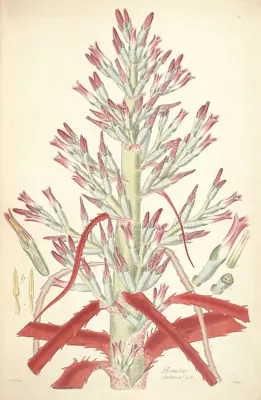

pranet · 出典付きの植物図鑑
ananas
Bromelia pinguin L. · Bromeliaceae

Bromelia pinguin, also called ananas or anana, is a plant species in the genus Bromelia. This species is native to Central America, Mexico, the West Indies, and northern South America. It is also reportedly naturalized in Florida. It is very common in Jamaica, where it is planted as a fence around pasturelands on account of its prickly leaves, and has historically been used as an herbal abortifacient. The plant can be stripped of its pulp, soaked in water, and beaten with a wooden mallet, and it yields a fiber whence thread is made. In Nicaragua and El Salvador it is used to make gruel.
出典: Wikipedia (en): Bromelia pinguin · CC BY-SA 4.0
異名: Agallostachys fastuosa (Lindl.) Beer, Agallostachys pinguin (L.) Beer, Ananas pinguin (L.) Gaertn., Ananas pinguin Trew, Bromelia fastuosa Lindl., Bromelia ignea Beer, Bromelia peguin L., Bromelia sepiaria Schult. & Schult.f., Karatas penguin Mill., Karatas pinguin (L.) Mill.
同定や利用は自己責任でお願いします。この図鑑だけを根拠に野生の植物を食べないでください。
出典
- 学名: World Flora Online Plant List 2026-06 · CC0 1.0
- 名前: Wikipedia の記事名と Wikidata · CC0 1.0（Wikidata）。記事名は事実
- 説明: Wikipedia (en): Bromelia pinguin · CC BY-SA 4.0
- 食用・毒性: World Checklist of Useful Plant Species (Diazgranados et al. 2020, RBG Kew) · CC BY 4.0
- 分布: World Checklist of Vascular Plants (WCVP), RBG Kew, version 2026-06-04 · CC BY 3.0
このページは pranet のデータから自動生成しています。コードは MIT、データは項目ごとのライセンス（説明）。